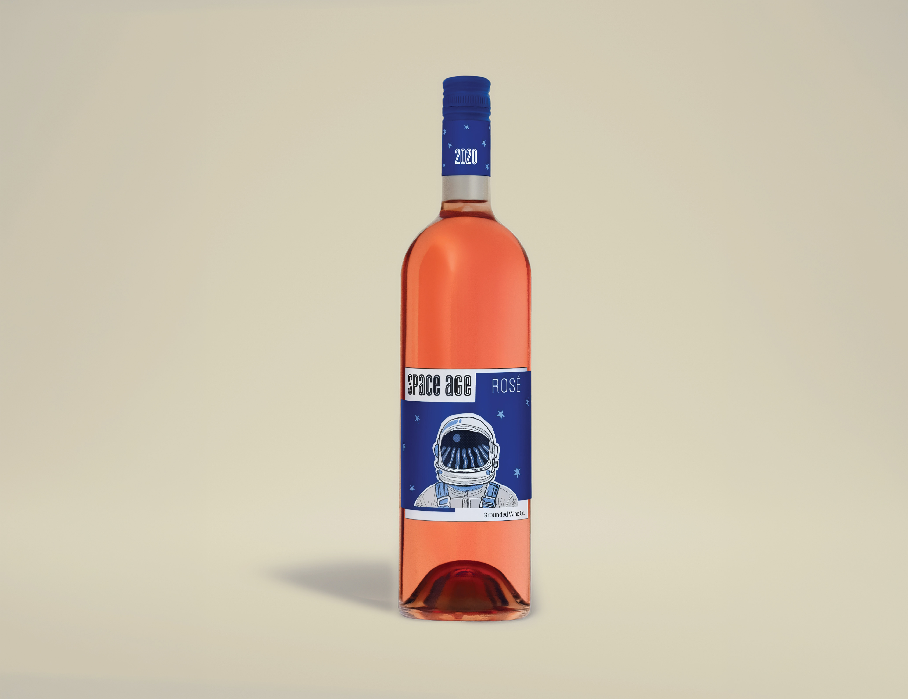
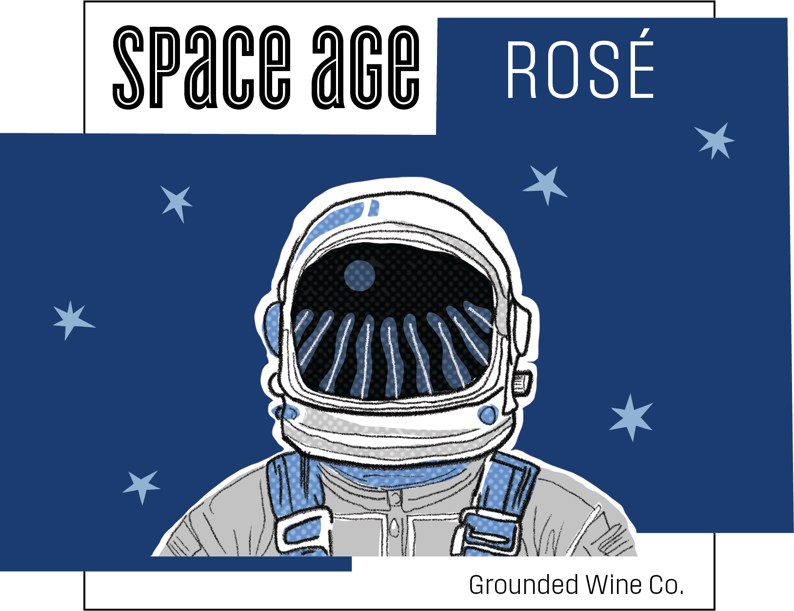

Space Age Wine Packaging
Label Redesign for Space Age Rosé
Concept
This project redesigns the label for Space Age Rosé by Grounded Wine Co., reinterpreting the brand through a more expressive and concept-driven visual system.
The original packaging leaned on a literal NASA-inspired aesthetic. This redesign shifts the focus toward exploration and possibility, framing wine as an act of discovery and aligning the tasting experience with the curiosity of the space age.
A hand-drawn astronaut serves as the central motif, with a vineyard reflected in the visor—bridging earth and space, tradition and innovation. This juxtaposition positions the product as both grounded and forward-thinking, transforming the label into a narrative moment rather than a static graphic.
Design Approach
The visual language draws from mid-century illustration and retro-futurist aesthetics, using simplified forms and expressive linework to create an optimistic, imaginative tone.
A limited blue spot color palette—deep mid-century blue paired with a lighter blue-grey, alongside black and white—creates contrast while maintaining cohesion and print efficiency.
Hierarchy is structured to guide the viewer from the astronaut illustration, to the vineyard reflection, and finally to the typographic information. The Cyclone typeface echoes the line quality of the illustration, reinforcing cohesion between image and type while maintaining clarity.
Result
The final label transforms Space Age Rosé into a more conceptually engaging and visually memorable product. By emphasizing illustration, narrative, and controlled hierarchy, the design captures the spirit of the space age—optimistic, exploratory, and imaginative—while remaining functional and legible in a retail context.